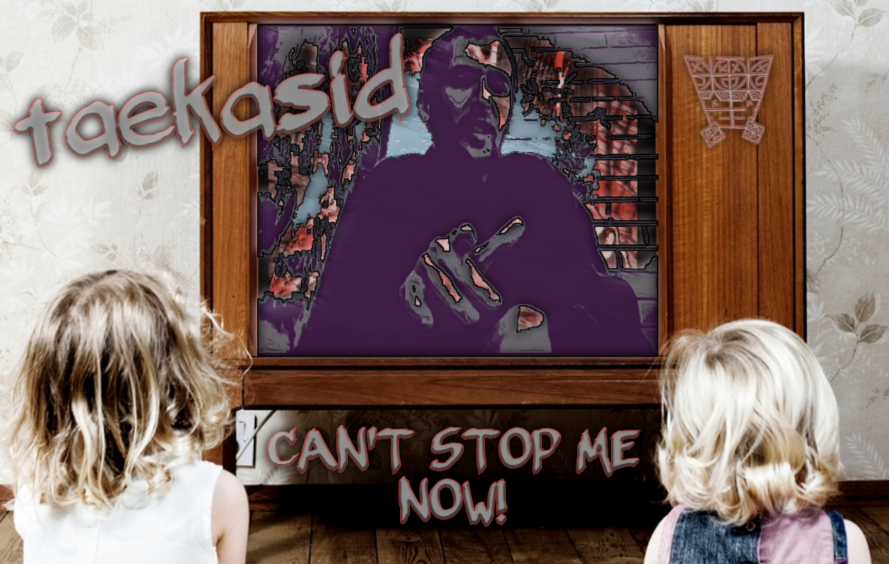

++ Buy + Download + + Stream ++
Asid Freak, or Just a Freak?TaeKasiD , an Australian hip-hop artist in Perth, didn't understand the question nor how we could see him. He then continued to mold his silver-paper hat, straighten up his tutu and skip through the freeway.
The search continues..
TaeKasiD's, music reflects a strange balance of dark lyrics and upbeat music.
"I know how it sound's to most people, but you don't have to take serious things that serioisly. Honestly, it's not uncommon for people to turn into a psychiatrist over a funny story.
Sure, I'm a bit tropo, but aren't we all?"TaeKasiD, made his debut in July 2021 and by August 2021 he had released an EP, an album and two singles.
"A fair few songs were mastered the same day I began to write them. The album On Asid was around three days all up."